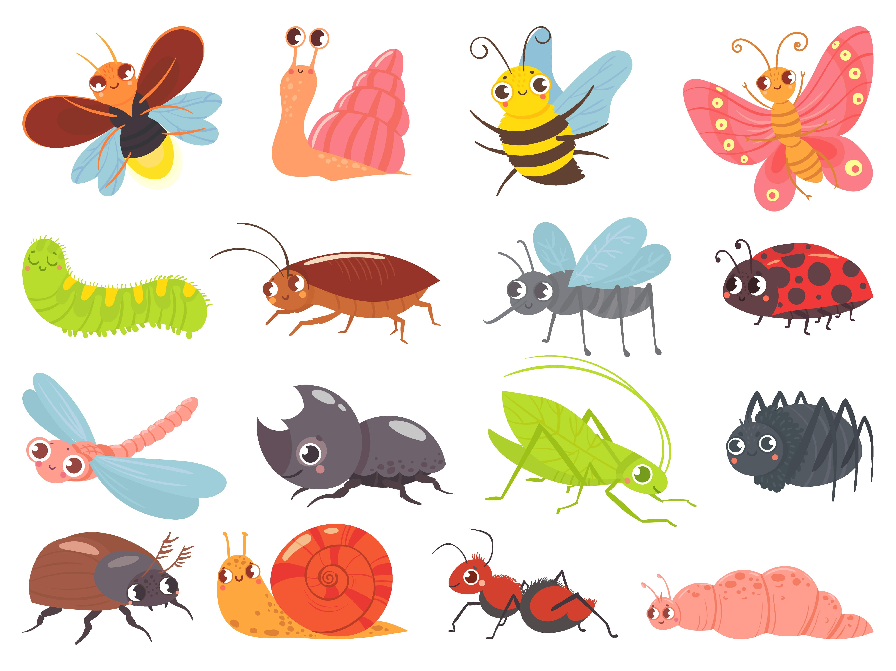
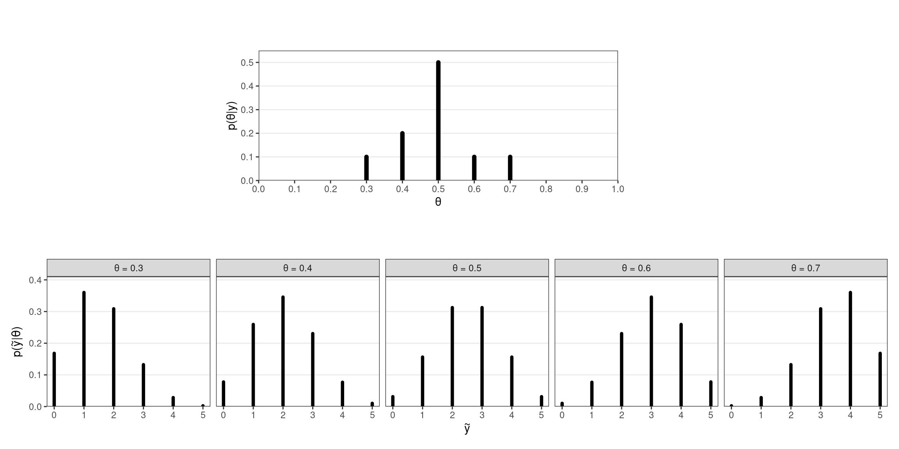

Práctica - Unidad 2
Modelos de Distribuciones Conjugadas
Esta sección contiene ejercicios para trabajar con modelos basados en distribuciones conjugadas. En general, los ejercicios requieren cálculos o derivaciones que se pueden realizar a mano. Sin embargo, se promueve fuertemente el uso de la computadora y el lenguaje R para verificar los resultados, mostrar soluciones alternativas y ejercitar el uso de una herramienta que será de suma utilidad a lo largo de todo el curso y de la vida profesional.
💻📌 ¿Quién domina el posterior?
Para cada una de las situaciones siguientes, se da una distribución a priori Beta para el parámetro \(\pi\) de un ensayo binomial. Para cada escenario, identificar cuál de estos se cumple: el prior tiene mayor influencia en el posterior, los datos tienen más influencia en el posteriori, o la creencia a priori y los datos influyen de manera similar en la creencia a posteriori
- Prior: \(\pi \sim \text{Beta}(1,4)\), observaciones: \(y=8\) éxitos en \(n=10\) ensayos.
- Prior: \(\pi \sim \text{Beta}(20,3)\), observaciones: \(y=0\) éxitos en \(n=1\) ensayos.
- Prior: \(\pi \sim \text{Beta}(4,2)\), observaciones: \(y=1\) éxitos en \(n=3\) ensayos.
- Prior: \(\pi \sim \text{Beta}(3,10)\), observaciones: \(y=10\) éxitos en \(n=13\) ensayos.
- Prior: \(\pi \sim \text{Beta}(20,2)\), observaciones: \(y=10\) éxitos en \(n=200\) ensayos.
💻📌 Más o menos certeza
Sea \(\theta\) la proporción de personas que prefieren los perros a los gatos. Suponga que se elige una distribución \(\text{Beta}(7,2)\) para representar la creencia a priori
- De acuerdo al prior ¿cuáles son valores razonables para \(\theta\)?
- Se observa en una encuesta que \(y=19\) de \(n=20\) personas prefieren perros, ¿cómo cambia eso el conocimiento acerca de \(\theta\)? Comenta en términos de la evolución de la credibilidad media y del grado de certidumbre acerca de \(\theta\).
- Si, en lugar de eso, se determina que \(y=1\) de \(n=20\) personas prefieren perros, ¿cómo cambia ahora el grado de credibilidad de los diferentes valores de \(\theta\)?
- Si, en lugar de eso, se determina que \(y=10\) de \(n=20\) personas prefieren perros, ¿cómo cambia ahora el grado de credibilidad de los diferentes valores de \(\theta\)?
💻📌 Pasito a pasito
Sea \(\theta\) la probabilidad de éxito de un evento de interés. Sea \(\text{Beta}(2,3)\) la distribución a priori para \(\theta\). Actualiza la distribución a posteriori para \(\theta\) secuencialmente:
- Primera observación: éxito.
- Segunda observación: éxito.
- Tercera observación: fracaso.
- Cuarta observación: éxito.
💻📌 Pasitos tras pasitos
Sea \(\theta\) la probabilidad de éxito de un evento de interés. Sea \(\text{Beta}(2,3)\) la distribución a priori para \(\theta\). Actualiza la distribución a posteriori para \(\theta\) secuencialmente dados conjuntos de cinco observaciones:
- Primeras observaciones: tres éxitos.
- Segundas observaciones: un éxito.
- Terceras observaciones: un éxito.
- Cuartas observaciónes: dos éxitos.
💻📌 Diferentes observaciones, diferentes posteriors
Una empresa que fabrica zapatillas está diseñando una publicidad para Instagram. Tres empleados comparten que la creencia a priori para \(\pi\), la probabilidad de que un cliente haga clic en el anuncio cuando lo ve, puede expresarse con una distribución \(\text{Beta}(4, 3)\). No obstante, los tres empleados realizan tres experimentos distintos y por ende tienen acceso a datos diferentes. El primer empleado prueba el anuncio en una persona, que no cliquea el anuncio. El segundo lo prueba en 10 personas, de las cuales 3 cliquean el anuncio. El último lo prueba en 100 personas, 20 de las cuales cliquean el anuncio.
- Describa el entendimiento a priori que los empleados tienen sobre \(\pi\).
- Especifique la distribución a posteriori de cada uno de los empleados.
- Compare las distribuciones a posteriori de cada empleado.
💻📌 ¿Galletitas o masitas?
La UNR reúne cada año a estudiantes provenientes de diferentes localidades. Cuántas cuadras constituyen una distancia “caminable” suele ser motivo de discusión, entre otros. Pero la verdadera grieta está entre la denominación galletitas versus masitas. Un rosarino pone un prior \(\text{Beta}(20,2)\) a la proporción de personas que dicen galletitas, mientras que un oriundo de una localidad del interior dirá que la credibilidad a priori es \(\text{Beta}(2,8)\).
- Resuma ambas distribuciones a priori y explique con sus palabras lo que implican.
- Con la información de sus compañeros de curso, actualice ambas distribuciones a priori. ¿Es suficiente esa información para acercar ambas posturas?
💻 📌 Mi primera huerta
En un campamento de verano para infantes se realizaron actividades que promueven el contacto con la naturaleza. Una de las tareas consistió en germinar semillas de tomate. Josefina plantó 18 semillas en su almaciguera. Al cabo de 5 días, 8 de ellas germinaron. Sea \(\theta\) la probabilidad de que una semilla de tomate germine y sea \(\text{Beta}(1, 1)\) su distribución a priori.
- ¿Qué información implica el prior sobre la probabilidad de germinación?
- Calcule la media y el desvío estándar a posteriori de \(\theta\) a mano.
- Verifique el cálculo utilizando R.
- Obtenga un intervalo de credibilidad del 95% para \(\theta\).
Foto de Markus Spiske en Unsplash 💻 ¿Quién dijo que el fútbol siempre da revancha?
En la final del 2018 de la Copa del Mundo de la FIFA, Francia le ganó a Croacia por 4 a 2. Considere que el número de goles que un equipo hace en un partido puede modelizarse con una distribución de Poisson. Suponga un parámetro \(\lambda_F\) para Francia y uno \(\lambda_C\) para Croacia. Elija una distribución Gamma a priori para el número medio de goles por partido (es decir, \(\lambda_F\) y \(\lambda_C\) compartirán la distribución a priori). \(\lambda_F\) da una idea de la capacidad de Francia de hacer goles (\(\lambda_C\) lo mismo, pero para Croacia).
En función del resultado del partido, obtenga las distribuciones a posteriori de \(\lambda_F\) y \(\lambda_C\) y responda utilizando R:
- ¿Qué probabilidad hay de que Francia fuera un mejor equipo que Croacia?
- Si el mismo partido se jugara de nuevo (cosa que los franceses en aquella oportunidad no pidieron), ¿cuál es la probabilidad de que Francia ganara de nuevo?
AyudaTO DO
Mirá si me va a pasar a mi…
Durante el desarrollo de las vacunas contra el COVID-19, un medio anunció para una determinada vacuna una eficacia del 100%.
En la fase 3 de un ensayo en adolescentes de entre 12 y 15 años, la vacuna BNT162b2 de Pfizer-BioNTech para el COVID-19 demostró una eficacia del 100% y una respuesta robusta de anticuerpos. El ensayo clínico involucró 2260 jóvenes estadounidenses. En el ensayo, 18 casos de COVID-19 fueron observados en el grupo placebo (\(n=1129\)) y ninguno en el grupo vacunado (\(n=1131\))
Es de esperar que, en un ensayo más grande, aparezca algún caso de COVID-19 en el grupo que recibió el tratamiento. ¿Cómo se estima la probabilidad de algo que aún no ocurrió?
AyudaTO DO
💻 La regla del tres
Una estudiante de Licenciatura en Estadística está releyendo su tesina antes de entregarla. Si en 20 páginas encontrase 5 de ellas con al menos un typo, sería razonable estimar que la probabilidad de que una página contenga un typo es \(\frac{5}{20} = \frac{1}{4}\). ¿Pero qué ocurre si en 20 páginas no encuentra ningún error?
Verifcar que, partiendo de un prior uniforme, \(\frac{3}{N}\) es una estimación razonable para \(\tau\) (la probabilidad de que una página contenga un typo), siendo \(N\) el número de páginas. Para ello, grafique la distribución a priori que se obtiene al haber observado 0 typos en 10 páginas y luego halle la probabilidad de que \(\tau < \frac{3}{N}\) para diferentes valores de \(N\) (10, 100, 1000, 10000).
AyudaTO DO
¿Tenés alguien para recomendar?
Una colega quiere comprar un producto por Internet. Tres vendedores ofrecen el mismo producto al mismo precio. Un vendedor tiene 100% de evaluaciones positivas, con 10 reviews. Otro tiene 96% de evaluaciones positivas, con 50 reviews. El último tiene 90% de comentarios positivos, con 200 evaluaciones. ¿Cuál de los tres vendedores le recomendarías?
💻📌 Bichos
Un biólogo quiere determinar la densidad de un insecto en su región. Su conocimiento a priori del número promedio de insectos por unidad de área (\(\text{m}^2\)) se puede representar con una distribución Gamma de media 0.50 y desvío estándar 0.25. En una investigación en 20 \(\text{m}^2\) de área, se hallan 3, 2, 5, 1 y 2 insectos en los primeros 5 \(\text{m}^2\) y ninguno en la fracción de tierra restante.
- Halle la distribución a posteriori del número medio de insectos por unidad de área.
- Halle la distribución predictiva a posteriori del número de insectos que se espera encontrar en una exploración de un área de 10 \(\text{m}^2\)

Una gran variedad de insectos
Imágen de FreepikAyudaTO DO
📌 Alter-ego
El profesor Caprista y el profesor Evangetto están dando sus primeros cursos de Estadística Bayesiana. Sus colegas les dijeron que el puntaje promedio en un examen final, \(\mu\), varía normalmente año a año con media 8 y desvío estándar 0.4. Y además, que los puntajes individuales de lxs estudiantes \(Y\) varían normalmente alrededor de \(\mu\) con una desviación estándar de 0.4
- ¿Cuál es la probabilidad a priori de que un estudiante se saque más de 9 en un examen final?
- El profesor Caprista toma el examen final y observa que sus 20 estudiantes obtuvieron una nota media de 8.6. Halle la distribución a posteriori de \(\mu\).
- El profesor Evangetto toma el examen final y observa que sus 20 estudiantes obtuvieron una nota media de 8.2. Halle la distribución a posteriori de \(\mu\).
- Combine las notas de ambos exámenes para obtener la distribución a posteriori de \(\mu\)
- ¿Cuál es la probabilidad a posteriori de que un estudiante se saque más de 9 en un examen final?
📌 Inferencia sobre una distribución de Poisson
La distribución de masa de probabilidad Poisson se define como
\[ \begin{array}{lcr} \displaystyle p(x \mid \lambda) = \frac{e^{-\lambda}\lambda^x}{x!} & \text{con} & x \in \{0, 1, 2, \cdots \} \end{array} \]
donde \(\lambda > 0\) es la cantidad promedio de veces que ocurre el evento de interés en un periodo o espacio determinado.
- Derive el estimador de máxima verosimilitud del parámetro \(\lambda\).
- Derive el posterior \(p(\lambda \mid \boldsymbol{x})\) suponiendo que el prior sobre \(\lambda\) es \(\text{Gamma}(\lambda \mid \alpha, \beta)\) con \(p(\lambda \mid \alpha, \beta) \propto \lambda^{\alpha - 1}e ^ {-\lambda \beta}\).
Ayuda: El posterior también es una distribución Gamma. - ¿A qué valor tiende la media a posteriori cuando \(\alpha \to 0\) y \(\beta \to 0\)?
Recuerde que la media de una distribución \(\text{Gamma}(\alpha, \beta)\) es \(\alpha/\beta\).
📌 El modelo Gamma-Poisson
Sea \(\lambda\) la tasa de mensajes de WhatsApp que una persona recibe en una hora. Suponga inicialmente que se cree que la tasa de mensajes por hora tiene media 5 con desvío estándar de 0.25 mensajes.
- Elija una distribución Gamma que represente adecuadamente lo que se cree acerca de \(\lambda\)
- ¿Cuál es la probabilidad a priori de que la tasa de mensajes sea mayor a 10?
- ¿Cuántos mensajes se espera que reciba una persona en promedio en una hora?
Se sondea a un grupo de seis personas que recibieron 7, 3, 8, 9, 10 y 12 mensajes en la última hora.
- Graficar la verosimilitud de \(\lambda\).
- Determinar la distribución a posteriori de \(\lambda\).
- ¿Cuál es la probabilidad a posteriori de que la tasa de mensajes sea mayor a 10?
- ¿Cuántos mensajes se espera ahora que reciba una persona en promedio en una hora?
🧩 📌 Inferencia sobre una distribución Uniforme
Considere una distribución \(\text{Uniforme}(0, \theta)\). La función de densidad de probabilidad es
\[ p(x) = \frac{1}{\theta}\mathbb{I}(x \in [0, \theta]) \]
Sea \(\boldsymbol{X} = (X_1,..., X_n)\) un vector de \(n\) variables aleatorias independientes e idénticamente distribuidas según \(p(x)\)
Inferencia máximo-verosímil
- ¿Cuál es el estimador máximo verosímil de \(\theta\) (llámelo \(\hat{\theta}_{\text{MV}}\))?
- ¿Qué probabilidad le asigna el modelo a una nueva observación \(x_{n + 1}\) usando \(\hat{\theta}_{\text{MV}}\)?
- ¿Observa algún problema con el resultado anterior? Si es así, sugiera una alternativa mejor.
Inferencia Bayesiana
El prior conjugado de la distribución uniforme es la distribución de Pareto.
Si \(X \sim \text{Pareto}(\alpha, m)\), luego \[ p(x \mid \alpha, m) = \frac{\alpha m^\alpha}{x^{\alpha+1}} \mathbb{I}(x \ge m) \]
Si el prior es una distribución de Pareto, la distribución conjunta de \(\theta\) y \(\boldsymbol{X} = (X_1,..., X_n)\) es \[ p(\theta, \boldsymbol{X}) = \frac{\alpha m^\alpha}{\theta^{n + \alpha + 1}} \mathbb{I}(\theta \ge \max(\boldsymbol{X})) \]
Llamando \(M_x = \text{max}(\boldsymbol{X})\). La evidencia es
\[ \begin{aligned} p(\boldsymbol{X}) &= \int_{M_x}^\infty \frac{\alpha m^\alpha}{\theta^{n + \alpha + 1}} d\theta \\ &= \begin{cases} \displaystyle \frac{\alpha}{(n+\alpha)m^n} & \text{Si } M_x \le m \\ \displaystyle \frac{\alpha m^\alpha}{(n+\alpha)M_x^{n+\alpha}} & \text{Si } M_x > m \\ \end{cases} \end{aligned} \]
Derive el posterior y muestre que puede ser expresado como una distribución de Pareto.
🧩 📌 Inferencia sobre una distribución Exponencial
El tiempo de vida de una máquina en años \(X\) es modelado con una distribución exponencial con parámetro \(\theta\) desconocido. La función de densidad es: \[ \begin{array}{lcrr} p(x \mid \theta) = \theta e^{-\theta x} & \text{con} & x \ge 0, & \theta \ge 0 \end{array} \]
Muestre que el estimador máximo verosímil (MV) es \(\hat{\theta}_\text{MV} = 1/\bar{x}\).
Suponga que se observan los siguientes tiempos de vida de tres máquinas independientes \(x_1 = 5\), \(x_2 = 6\), \(x_3 = 4\). ¿Cuál es el valor del estimador MV?
Una experta del área sugiere que \(\theta\) debe tener una distribución a priori que también sea exponencial. \[ \begin{aligned} \theta \mid \lambda &\sim \text{Exp}(\lambda) \\ p(\theta \mid \lambda) &= \lambda e^{-\lambda \theta} \end{aligned} \] Elija un valor para el hiperparámetro \(\lambda\) de la distribución a priori tal que \(\mathbb{E}(\theta) = 1/3\). Utilice \(\lambda_0\) para representar al valor.
¿Cuál es el posterior \(p(\theta \mid \boldsymbol{X}, \lambda_0)\)?
¿Es la distribución exponencial conjugada con un likelihood exponencial?
Encuentre la media del posterior, \(\mathbb{E}(\theta \mid \boldsymbol{X}, \lambda_0)\)
Explique por que difieren el estimador MV de la media a posteriori. ¿Cuál es más razonable en este ejemplo?
📌 Otras distribuciones conjugadas (I)
Considere el siguiente modelo: \[ \begin{array}{l} Y \mid \theta \sim \text{Geometrica}(\theta) \\ \theta \sim \text{Beta}(\alpha, \beta) \end{array} \]
donde la función de densidad de la distribución geométrica es \(p(y \mid \theta) = \theta (1 - \theta)^{y-1}\) para \(y \in {1,2,\dots}\)
- ¿Qué debería ocurrir con la distribución a posteriori de \(\theta\) para poder afirmar que la distribución geométrica es conjugada de la beta?
- Derive la distribución a posteriori de \(\theta\) y concluya.
📌 Otras distribuciones conjugadas (II)
Considere el siguiente modelo:
\[ \begin{aligned} Y\mid\theta &\sim \text{BinomialNeg}(\theta, m) \\ \theta &\sim \text{Beta}(\alpha,\beta) \end{aligned} \]donde la función de densidad de la distribución binomial negativa es
\[ p(y \mid \theta, m) = {y+m-1 \choose y} \theta^{m} (1-\theta)^y \]
Obtenga la distribución a posteriori de \(\theta\).
🧩 Otras distribuciones conjugadas (III)
Considere el siguiente modelo: \[ Y \mid \theta \sim \text{Exp}(\theta) = \text{Gamma}(1,\theta) \]
donde la función de densidad exponencial es \(p(y \mid \theta) = \theta e^{-\theta y}\).
Elija una distribución a priori conjugada de la verosimilitud propuesta y obtenga la expresión para la distribución de probabilidad a posteriori
💻 Simulaciones
A diferencia de la sección anterior, que requiere resolver los ejercicios a mano y promueve el uso de la computadora y R de manera complementaria, esta sección contiene ejercicios que deben ser resueltos mediante técnicas de simulación implementadas en R. Es posible que en algunos casos también se pueda obtener una solución analítica. En estos casos, puede resultar de utilidad obtener también una solución a mano para validar el resultado, evaluar el nivel de dificultad y ver que tan intuitivo resultan ambos enfoques.
📌 Entrada en calor
Para cada una de las siguientes situaciones, hallar los intervalos centrales de credibilidad
- Intervalo del 95% para \(\pi\) siendo \(\pi\mid \boldsymbol{y} \sim \text{Beta}(4,5)\).
- Intervalo del 60% para \(\pi\) siendo \(\pi\mid \boldsymbol{y} \sim \text{Beta}(4,5)\).
- Intervalo del 89% para \(\lambda\) siendo \(\lambda\mid \boldsymbol{y} \sim \text{Gamma}(1,8)\).
- Intervalo del 95% para \(\lambda\) siendo \(\lambda\mid \boldsymbol{y} \sim \text{Gamma}(2,5)\).
- Intervalo del 81% para \(\mu\) siendo \(\mu\mid \boldsymbol{y} \sim \mathcal{N}(10,2^2)\).
- Intervalo del 99% para \(\pi\) siendo \(\mu\mid \boldsymbol{y} \sim \mathcal{N}(-3,1^2)\).
Propiedades frecuentistas de inferencias bayesianas (!!)
Sea una variable \(Y\) tal que \(Y \mid \theta \sim \text{Binomial}(n, \theta)\) y \(\theta \sim \text{Beta}(1/2, 1/2)\). Mediante un estudio de simulación calcule la cobertura empírica del intervalo de credibilidad del 95% con \(n \in \{1, 5, 10, 25\}\) y \(\theta \in \{0.05, 0.10, \dots, 0.50 \}\). Describa las propiedades frecuentistas del intervalo de credibilidad bayesiano.
📌 ¿Te preguntaste alguna vez cuál es la distribución de un p-value?
Considere un problema conocido. Se desean comparar dos muestras independientes de tamaño 5 utilizando un test t y utilizando el test de Mann-Whitney.
- Considere el caso en que las dos muestras provienen de poblaciones con igual media y desvío estándar (supongamos normal de media nula y varianza unitaria). Si se repitiera muchas veces el proceso de tomar las muestras y realizar los tests, ¿qué distribución tendrán los p-values obtenidos para cada test?
- Considere ahora el caso en que las dos muestras provienen de poblaciones con diferente media e igual desvío estándar (\(\mathcal{N}(0,1)\) y \(\mathcal{N}(1,1)\)). Si se repitiera muchas veces el proceso de tomar las muestras y realizar los tests, ¿qué distribución tendrán los p-values obtenidos para cada test?
Elección de distribuciones a priori
Esta útima sección de la práctica tiene como propósito ejercitar el uso de distribuciones de probabilidad como herramienta para reflejar información de un problema determinado.
📌 Esbozar la distribución de las siguientes variables
- El número de personas que compran café en el bar de la facultad asumiendo distribución de Poisson.
- El peso de perros adultos en kilogramos asumiendo una distribución Uniforme.
- El peso de elefantes adultos en kilogramos asumiendo una distribución Normal.
- El peso de humanos adultos en libras asumiendo una distribución asimétrica hacia la derecha.
📌 Verificar los resultados de manera computacional
Para cada uno cada uno de los ejemplos del ejercicio anterior, graficar la distribución usando R. Seleccionar los parámetros que creas razonable, tomar una muestra aleatoria de tamaño 1000 y graficar la distribución en base a las muestras. ¿Se refleja tu conocimiento del problema en la distribución graficada? Si no, ajustar los parámetros y repetir el proceso hasta que el resultado tenga concuerde con el conocimiento del problema.
💻 📌 Hay que amigarse con de la distribución Beta
Comparar las siguientes distribuciones a priori.
- \(\text{Beta}(0.5, 0.5)\).
- \(\text{Beta}(1, 1)\).
- \(\text{Beta}(1, 4)\).
- \(\text{Beta}(5, 1.5)\).
- ¿En qué se diferencian?
- ¿Cuál de ellas es más informativa?
- ¿Cómo lo determinaste?
💻 📌 Elicitación de priors
En cada una de la situaciones que se describen debajo, ajustar manualmente los parámetros de una distribución \(\text{Beta}\) para que reflejen la información brindada. No siempre existe una única respuesta correcta.
- Un amigo se postuló para un empleo en LinkedIn y te dijo: “Diría que tengo una chance del 40% de que me den el trabajo, pero no estoy seguro”. Cuando le preguntamos un poco mas, dijo que estima sus chances entre un 20% y un 60%.
- Un grupo de investigación del CONICET desarrolló una nueva prueba para una enfermedad bastante rara. El grupo espera que esta prueba arroje resultados correctos el 80% de las veces, con una varianza de 0.05.
- El primo de un amigo es un apasionado de la pesca, lo practica muy seguido, y se dice ser muy bueno. Según comenta tu amigo, en el asado de los Jueves el pescador dijo lo siguiente:
Si tengo que hacer un promedio, 9 de cada 10 veces que salgo, vuelvo con algo. Pero últimamente te diría que siempre es 10 de 10. Estoy infalible. La verdad es que soy un crack de la pesca.
Ante el descreimiento de algunos de los comensales supo reconocer que no siempre le fue tan bien:
Tuve mis malas rachas, pero nunca menos de 8 pescas de cada 10 salidas.
💻 📌 Efecto de la parametrización
Sea \(\theta\) la probabilidad de éxito en un experimento binomial y sea \(\gamma = \frac{\theta}{1-\theta}\) la chance de éxito. Utilizar simulaciones para explorar los efectos de las siguientes elecciones de distribuciones a priori
- Si \(\theta \sim \text{Uniforme}(0, 1)\), ¿cuál es el prior inducido para \(\gamma\)?
- Si \(\theta \sim \text{Beta}(5, 5)\), ¿cuál es el prior inducido para \(\gamma\)?
- Si \(\gamma \sim \text{Uniforme}(0, 100)\), ¿cuál es el prior inducido para \(\theta\)?
- Si \(\gamma \sim \text{Gamma}(1, 1)\), ¿cuál es el prior inducido para \(\theta\)?
Teoría de la Decisión
Dada la distribución a posteriori \(p(\theta \mid y)\), probar que el estimador de Bayes que minimiza la función de pérdida \(L_1\) es la mediana de \(p(\theta \mid y)\).
Suponga que la distribución a posteriori de \(\pi\), \(p(\pi \mid y)\), es \(\text{Beta}(12,4)\). Determine mediante simulación el estimador que minimiza la pérdida de Huber: \[ \mathcal{L}(\delta,\pi) = \begin{cases} \frac{1}{2} (\pi - \delta)^2 \text{ si } |\pi - \delta| \leq \alpha \\ \alpha \cdot (|\pi - \delta|-\frac{1}{2}\alpha) \text{ en cualquier otro caso} \end{cases} \]
Otros
✍️ 📌 Distribución predictiva a posteriori
Considere un modelo \(y\mid \theta \sim \mathrm{Bin}(\theta,n)\), donde \(\theta\) puede tomar valores discretos \(0,\ 0.1,\ 0.2,\ \dots,\ 1\). Se realizaron inferencias sobre \(\theta\) y se obtuvo la distribución a posteriori que se muestra en la parte superior de la Figura 1.
Se desea obtener la distribución predictiva a posteriori para el número de éxitos \(\tilde{y}\) en \(n=5\) nuevas realizaciones del experimento. Cada valor de \(\theta\) da lugar a una posible distribución de \(\tilde{y}\) de acuerdo a la verosimilitud binomial, como se observa en la parte inferior de la Figura 1.

- Calcule \(p(\tilde{y}\mid\theta)\) para cada valor posible de \(\theta\) y compruebe que los gráficos de la parte inferior de la Figura 1 son correctos.
- Combine los \(p(\tilde{y}\mid\theta)\) ponderando por las probabilidades a posteriori de \(\theta\), \(p(\theta\mid y)\) para obtener la distribución predictiva a posteriori
- Compare la varianza de una de las \(p(\tilde{y}\mid\theta)\) (por ejemplo, la de \(\theta=0.5\)) con la varianza de la distribución predictiva a posteriori ¿qué observa?
- A partir de \(p(\theta\mid y)\) y de la verosimilitud binomial, obtenga muestras de \(p(\tilde{y}\mid y)\) y grafique su distribución.
Referencias
Downey, Allen B. 2021. Think Bayes: Bayesian Statistics in Python. 2nd edition. O’Reilly Media. http://allendowney.github.io/ThinkBayes2/.
Johnson, Alicia A., Miles Q. Ott, y Mine Dogucu. 2022. Bayes Rules! An Introduction to Bayesian Modeling. 1st edition. Chapman; Hall/CRC. https://www.bayesrulesbook.com/.
Martin, Osvaldo A., Ravin Kumar, y Junpeng Lao. 2021. Bayesian Modeling and Computation in Python. 1st edition. Chapman; Hall/CRC.
Reich, Brian J., y Sujit K. Ghosh. 2019. Bayesian Statistical Methods. 1st edition. Chapman; Hall/CRC.